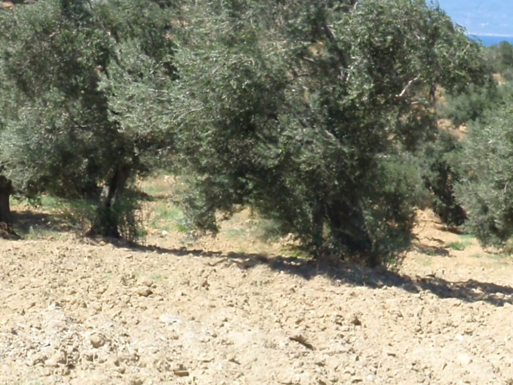
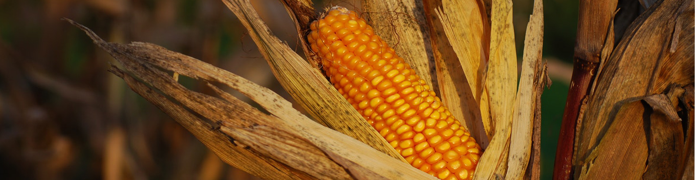

Olin
Olin, Urla, İzmir çıkışlı bir zeytinyağını her gün mutfakta rahat yer bulacak güvenilir bir çizgide sofraya sunar. Sofraya ulaşan her şişede temiz, karakterli ve hatırlanır bir tat bırakması beklenir.
Şişe ve Ürün Görselleri
Olin Hakkında
Olin hikayesi
Olin, her gün mutfakta yer bulacak güvenilir bir çizgi sunar. Urla, İzmir çıkışlı bu yağ, günlük kullanımda da güven veren temiz bir akış anlayışıyla sofraya ulaşır; şişe açıldığında hem lezzet hem güven hissi bırakması beklenir.

Olin, Urla, İzmir tarafının karakterini sofraya taşır; şişedeki tat toprağın ve iklimin birlikte kurduğu dengenin uzantısı gibi ilerler.
Hakkımızda sayfasından öne çıkanlar
Geleneksel Balçova 29 Ekim Cumhuriyet Bayramı Etkinliği
09.10.2025 Tarihli Olağanüstü Genel Kurul Toplantı Daveti
Pazarlama ve Satış Ekibimize Yeni Araçları Hayırlı Olsun.
Lezzet ve üretim çizgisi
Ege tarafında yetişen zeytinlerin rüzgarı, güneşi ve uzun mevsim ritmi tadın dengesine doğrudan yansır. Bu doğallık şişede fazla süslenmeden korunduğunda ürün çok daha ikna edici bir hale gelir.

Olin anlatılırken önce damakta bıraktığı iz öne çıkar. Memecik tarafının daha yeşil, daha diri ve hafifçe boğazda iz bırakan karakterini korur. Bu yüzden kahvaltıda ekmeğe gezdirildiğinde, salatada son dokunuşta kullanıldığında ya da zeytinyağlı bir yemekte temel lezzeti kurduğunda farklı biçimde karşılık verir.
Olin tarafında güçlü görünen nokta yalnızca tat iddiası değildir; şişede verilen söz ile sofrada karşılaşılan lezzetin birbirini tutmasıdır. İyi yağ, kokusuyla temiz açılmalı, damakta akıcı ilerlemeli ve ikinci lokmada da aynı güveni vermelidir.
Bu yağı ilk kez deneyecekseniz önce kullanım anını düşünmek gerekir. Daha canlı ve karakterli bir ifade arayanlar kahvaltı ve çiğ dokunuşlara, daha yumuşak bir akış isteyenler günlük mutfak kullanımına uygun serilere yönelebilir. İlk kez tanışacaksanız küçük hacimle başlayıp damakta bıraktığı izi görün, mutfakta sürekli kullanacaksanız daha büyük ambalaja geçin.
Sofrada kullanım ve seçim
Olin alındığında yalnızca bir yağ değil; emeği hissedilen, geldiği yer belli olan ve hangi sofrada parlayacağını bilen bir seçim alınmış olur. Bu yüzden şişenin bıraktığı genel iz, ürünün uzun vadede mutfakta yer bulup bulmayacağını da belirler.
Şişe açıldığında önce gelen koku, sonra dilde bıraktığı akış ve en son boğazda kalan kısa iz, iyi bir zeytinyağını anlatan temel ayrıntılardır. Bu üçü bir araya geldiğinde ürün kendini gerçekten göstermeye başlar.
İster kahvaltı sofrasında ekmeğe gezdirilsin ister salatada son dokunuş olarak kullanılsın, iyi bir şişe her kullanımda aynı güveni vermelidir. Düzenli tercih edilmesini sağlayan şey de bu tutarlılıktır.
Sofrada fark edilen iyi yağ, yalnızca parlak bir etiketle değil, ikinci lokmada da aynı temizliği sürdürebilmesiyle anlaşılır. Kalıcılığı belirleyen şey çoğu zaman tam olarak bu dengedir.
Satış Teşkilatı ve Bayiler aracılığıyla yurt içinde yıllık ortalama 24.000 ton bitkisel yağ satışı ve 15.000 ton karma yem satışı gerçekleştirilmektedir. Yağ ihracatı ise yıllık 700 ton civarındadır. Edirne Yağ Sanayi ve Ticaret A.Ş., 2024 yılında 3 milyar TL’ yi geçen bir satış cirosu gerçekleştirmiştir.
Trakya ve özellikle Edirne çiftçisine gerek tarım ürünleri gerekse hayvancılık konularındaki büyük desteğinin yanında Edirne’deki küçük ölçekli sanayinin ve Edirne esnafının ticaret hayatında önemli yer tutmaktadır. Çevre Koruma ve Ambalaj Atıklarını Değerlendirme Vakfının faal üyesi olan Edirne Yağ Sanayi, modern kimyasal ve biyolojik arıtma tesisi ile çevre dostu da olduğunu kanıtlamıştır.
Edirne Yağ Sanayi ve Ticaret A.Ş., 2024 yılında “GİMDES” tarafından Helal Gıda kapsamında belgelendirilmiştir.
Şişe açıldığında önce gelen koku, sonra dilde bıraktığı akış ve en son boğazda kalan kısa iz, iyi bir zeytinyağını anlatan temel ayrıntılardır. Bu üçü bir araya geldiğinde ürün kendini gerçekten göstermeye başlar.
Şişe açıldığında önce gelen koku, sonra dilde bıraktığı akış ve en son boğazda kalan kısa iz, iyi bir zeytinyağını anlatan temel ayrıntılardır. Bu üçü bir araya geldiğinde ürün kendini gerçekten göstermeye başlar.
Bölgeler ve Kategoriler
İletişim Bilgileri
- Balçova Atatürkçü Düşünce Derneği ile Balçova Kültür ve Dayanışma Derneği tarafından düzenlenen geleneksel 29 Ekim Cumhuriyet Bayramı Etkinliklerine her yıl olduğu gibi bu yıl da katkıda bulunmaktan onur duyduk.
- Bu yıl 10'uncusu düzenlenen Uluslararası Edirne Maratonuna Olin Ailesi olarak destek verdik. Maratonda dereceye giren katılımcılara Pazarlama ve Satış Müdürümüz Melih Kirişada ödüllerini takdim etti.